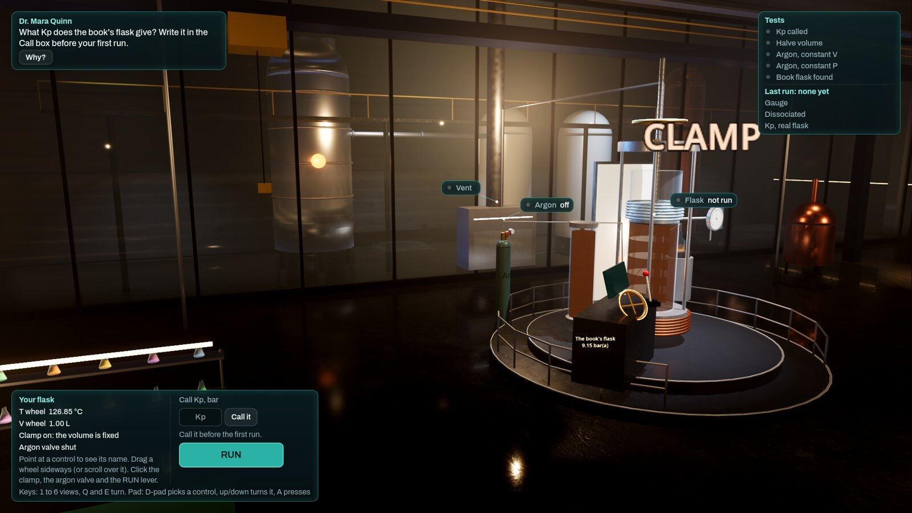
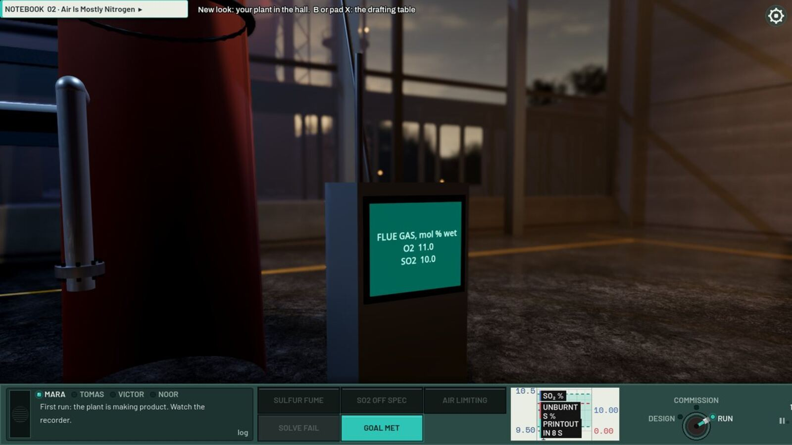

What it teaches. Pressure, temperature and inerts against the equilibrium wall of ammonia and SO₃, then Le Chatelier on your own bench. You build on the drafting table; once you commission, your plant stands in the hall.
5 jobs: L10 to L14. Site: Converter house. All of its jobs are drawn in the new look: a 3D hall and lab.
New look. Your L13 plant in the hall: a catalyst bed glowing at its temperature, a boiler steaming behind

New look. L14 Two Flasks: the twin flask on the dais in the private lab

New look. The flue analyser reads the engine's own gas, wet basis
L10 The Wall New look
The ammonia converter, pressure side
Brief
Single pass, twenty percent ammonia out of the converter. Every bar of pressure is on my electricity bill.
The gas arrives at 25 bar, one to three. The catalyst sleeps below 380 °C; the vessel is rated in steps of 100, 200 and 300 bar. Call it: predict before your first commission. The answer box locks when you commission; the printout marks your call right or wrong.
Goal
Converter outlet at least 20 mol % NH₃
Stay under the 300 bar vessel limit, or the relief lifts
Stars
Goal met: 20 mol % NH₃ out of the converter
A 100 bar vessel is enough
Cheapest compression and vessel per tonne of NH₃ (within 3 %)
If it fails
The printout names one of these when a goal is missed:
The catalyst is asleep.
Not enough pressure.
The relief valve lifted.
You are standing at the wall: too hot.
Coach steps (hints that show how to build)
Put the compressor on the syngas line. Its outlet pressure is your dial.four molecules become two, so pressure pushes the reaction toward ammonia.
Place the equilibrium converter after it, then the separator, the tank and the vent.the converter has a temperature dial; the separator takes the ammonia out as a liquid.
Pipe it: feed to compressor to converter to separator, liquid to the tank, gas to the vent.every outlet must end in a unit, a tank or the vent.
Commission and read the ammonia at the converter outlet.the outlet is the gas that has reached equilibrium, so it shows where the wall is.
The Equilibrium Window is up on the converter: change the pressure or the temperature and watch your point move on the curve.the curve falls with temperature and rises with pressure; your point rides on it.
Ask Why? and read the K numbers.it uses your own temperature and pressure.
L11 The Gas You Were Sold New look
The gas yard, three contracts
Brief
Three suppliers. The cheap one comes with argon and methane in it. Pick, and make your tonnage.
A is pure one-to-three, B has 5 % inerts, C has 10 %. Each feed is a contract: set the flows, 1000 kmol/h in all, converter at 450 °C. Two percentages: the Equilibrium Window plots conversion of the limiting reactant (say 35 %), the ticket reads NH₃ as a mole fraction of the outlet gas (say 21 %).
Goal
At least 170 kmol/h of NH₃ formed in one pass
Buy 1,000 kmol/h of gas in all, within 1 %
Converter at 450 °C, within 1 °C
Pressure at most 200 bar
Stars
Goal met: 170 kmol/h of NH₃ from 1000 kmol/h of gas at 450 °C
No more than 150 bar
Cheapest tonne of NH₃, gas bill included (within 3 %)
If it fails
The printout names one of these when a goal is missed:
The gas bought is off the job.
Over the pressure limit.
Not enough ammonia.
The converter is off 450 °C.
Coach steps (hints that show how to build)
Set the flow of the contract you want, and build the compressor and converter after the mixer.the argon and methane in the cheap gas ride through the converter and take up room.
Pipe every feed into the mixer (a contract you do not want stays at flow 0, but still needs its pipe), then mixer to compressor to converter to separator, liquid to the tank, gas to the vent.every mixer inlet needs a pipe and every outlet must end in a unit, a tank or the vent.
Commission and read the ammonia formed.tonnage is the goal; the percentage only helps you read it.
Look at the vent: the inerts leave with the unreacted gas.at constant pressure inerts dilute the reactants, and the reaction shifts left.
Ask Why? and read the dilution.it compares your gas with the pure one.
L12 Pressure Does Nothing New look
The shift converter
Brief
The shift converter makes hydrogen from CO and steam. Someone asked for a bigger compressor. Humour me: try the compressor, see that nothing changes, then remove it.
CO is fixed at 100 kmol/h; the steam feed is your ratio. HTS catalyst runs 320-450 °C, LTS 190-250 °C and costs more. Call it: predict before your first commission. The answer box locks when you commission; the printout marks your call right or wrong.
Goal
CO at the outlet at most 1 mol % (dry)
Converter inside a catalyst window: LTS 190-250 °C or HTS 320-450 °C
Stars
Goal met: CO at most 1.0 mol % dry, with a catalyst that works
Goal met with no compressor in the plant at that moment (a compressor you tried and then deleted does not count against you; one still on the plot does)
Cheapest hour of steam, compression and catalyst (within 3 %)
If it fails
The printout names one of these when a goal is missed:
The catalyst is asleep.
CO is still too high.
The compressor did nothing for the CO.
No catalyst works at this temperature.
Coach steps (hints that show how to build)
Try the compressor, as asked: place it before the converter, raise the pressure and see nothing change; then remove it (a plant with no compressor earns the second star).the reaction has two molecules on each side, so pressure has nothing to push on.
Pipe the plant: the CO and the steam into the mixer, then the converter and a product tank.every outlet must end in a unit or a tank.
Commission and read the CO at the outlet.compare it with the same run at low pressure.
Read CO on the dry gas, then move the temperature and the steam.colder and wetter both pull the equilibrium toward hydrogen.
Ask Why? and follow the K sum.K has no pressure in it when the molecules balance.
L13 The Staircase New look
The contact converter
Brief
Ninety-eight percent of the SO₂ must become SO₃, or it goes up the stack. One bed will not do it.
The burner gas arrives hot (the feed bank starts at 450 °C: turn it down to 420 °C first). It is 10 % SO₂, 11 % O₂ and 79 % N₂. The catalyst wakes at 410 °C and sinters above 630 °C. Cool between beds, and sell the heat. The acid tank at the end of the line is the absorber: the SO₃ goes into it (there is no separate absorber part). Call it: predict before your first commission. The answer box locks when you commission; the printout marks your call right or wrong.
Goal
Overall SO₂ conversion at least 98 %
No bed hotter than 630 °C
Stars
Goal met: 98 % conversion and no bed above 630 °C
Three beds or fewer
Cheapest tonne of acid, steam credit included (within 3 %)
If it fails
The printout names one of these when a goal is missed:
A bed is asleep.
Not enough steps.
The catalyst sintered.
The gas stalled on the equilibrium curve.
Coach steps (hints that show how to build)
Place an adiabatic bed after the feed. Its inlet temperature is the feed temperature.an adiabatic bed climbs the line of its own heat until it meets the equilibrium curve.
Put a boiler after the bed and cool the gas back toward 410 °C.cooling drops the gas under the curve again, and the next bed can climb further; the heat raises steam.
Pipe the feed through the bed and the boiler (and on to the next bed), and end the last outlet in the acid tank.every outlet must end in a unit or a tank.
Commission and read the bed exit temperature and the conversion.one bed stalls on the equilibrium curve.
Read the Equilibrium Window on a bed and follow the zig-zag as you change the feed temperature.each bed is a step up, each boiler a step back left.
Ask Why? and read the staircase.it counts the conversion bed by bed.
L14 Two Flasks New look
Your bench, after hours
Brief
The book says a sealed 1 L flask of 13.8 g of N₂O₄ at 400 K (126.85 °C) reads 9.15 bar. The twin flask beside yours is built to the book. Will yours read the same?
Call Kp from the book first (N = 14, O = 16, R = 0.083 L·bar/(mol·K)). Then find the temperature where your flask reads 9.15 bar, and run one argon test to see what shifts it. You have six runs, the tests included. Call it: predict before your first commission. The answer box locks when you commission; a right call earns a star.
Goal
Find the temperature where your 1 L flask reads the book's 9.15 bar, and run one argon test, within 6 runs
Stars
The job: your 1 L flask reads the book's 9.15 bar within 0.5 %, and one argon test is on record
Run all three tests: halved volume, argon at constant volume, argon at constant pressure
Call it: the book's Kp in bar, within 0.5 %
If it fails
Lab time is up: six runs, and your flask never read the book's 9.15 bar.
Coach steps (hints that show how to build)
Where does your flask read the book's 9.15 bar? Keep 1 L, clamp on, no argon, and turn the T wheel. You have six runs, the tests included.the gauge rises with temperature: hotter gas pushes harder, and more N₂O₄ splits into NO₂. Bracket it: one run too cold, one too hot, then split the gap.
What Kp does the book's flask give? Write it in the Call box before your first run.the gauge gives the moles, the moles give the dissociation, the dissociation gives Kp.
What happens to the brown if you squeeze the gas into half the space? Turn the V wheel to 0.5 L and pull the RUN lever.halving V doubles every partial pressure. Before you run, decide: darker, same or lighter after it settles? Then work Q against K.
What did the brown do in the first second, and after?the colour is the NO₂ concentration, a direct reading of the shift.
Does argon change anything if the piston cannot move? Volume back to 1 L, open the argon valve, keep the clamp on, and run.argon adds pressure but no N₂O₄ or NO₂. If the volume cannot change, which partial pressures change? Decide darker, same or lighter, then run.
And if the piston is free? Keep the argon open, release the piston clamp (the red handle marked CLAMP on top of the flask), and run.with the piston free, the argon has to make room. What does that do to the other gases' partial pressures? Decide, then run.
Why did the argon matter only once? Ask Why? and read Q against K.argon at constant volume leaves every partial pressure alone; at constant pressure it thins them.